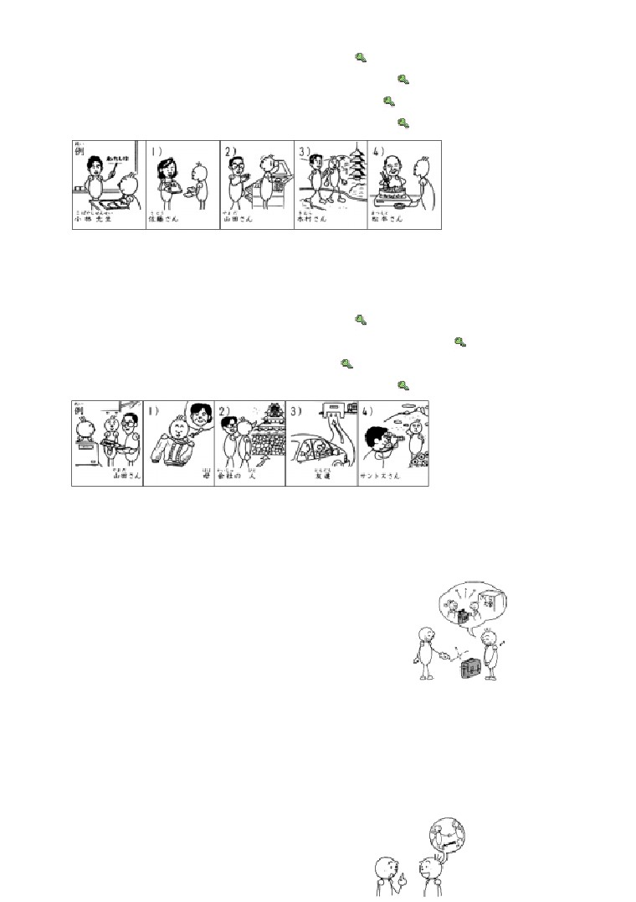

第２４
課
課:24 (頁:1/8)
ことば
1. くれます Ⅱ
給（我）
2. つれて いきます Ⅰ 連れて 行きます
帶（某人）去
3. つれて きます Ⅲ
連れて 来ます
帶（某人）來
4.
おくります
Ⅰ
送ります
送 人〕
［ひとを～］
［人を～］
5. しょうかいします Ⅲ 紹介します
介紹
6. あんないします Ⅲ
案内します
帶路，引路
7. せつめいします Ⅲ
説明します
說明
8.
いれます
Ⅱ
沖，泡〔咖啡〕
［コーヒーを～］
9. おじいさん／おじいちゃん
祖父，老爺爺
10. おばあさん／おばあちゃん
祖母，老奶奶
11. じゅんび
準備
準備（～します：做準備）
12. いみ
意味
意思
13.［お］かし
［お］菓子
糕點，點心
14. ぜんぶ
全部
全部
15. じぶんで
自分で
自己～
かい わ
■会話
ほかに
另外
しゃ
ワゴン車
旅行車
べん とう
［お］弁当
餐盒，便當
---以下單字請自行練習發音---
はは
ひ
母の 日
母親節
ぶん けい
文型
さ とう
1. 佐藤さんは わたしに クリスマスカードを くれました。
き むら
ほん
か
2. わたしは 木村さんに 本を 貸して あげました。
やま だ
びょう いん
でん わ ばん ごう
おし
3. わたしは 山田さんに 病院の 電話番号を 教えて
もらいました。
はは
おく
4.
母は わたしに セーターを 送って くれました。
れい ぶん
課:24 (頁:2/8)
例文
た ろう くん
す
1. 太郎君は おばあちゃんが 好きですか。
す
か し
…はい、好きです。 おばあちゃんは いつも お菓子を くれます。
2. おいしい ワインですね。
さ とう
…ええ、佐藤さんが くれました。 フランスの ワインです。
た ろう くん
はは
ひ
かあ
なに
3. 太郎君は 母の 日に お母さんに 何を して あげますか。
ひ
…ピアノを 弾いて あげます。
りょう り
ぜん ぶ
じ ぶん
4. ミラーさん、きのうの パーティーの 料理は 全部 自分で
つく
作りましたか。
てつだ
…いいえ、ワンさんに 手伝って もらいました。
でん しゃ
い
5. 電車で 行きましたか。
やま だ
くるま
おく
…いいえ。 山田さんが 車で 送って くれました。
かい わ
会話
てつだ
手伝って くれますか
ひ
こ
カリナ：
ワンさん、あした 引っ越しですね。
てつだ
い
手伝いに 行きましょうか。
ワ ン：
ありがとう ございます。
じ
ねが
じゃ、すみませんが、9時ごろ お願いします。
てつだ
い
カリナ：
ほかに だれが 手伝いに 行きますか。
やま だ
き
ワ ン：
山田さんと ミラーさんが 来て くれます。
くるま
カリナ：
車は？
やま だ
しゃ
か
ワ ン：
山田さんに ワゴン車を 貸して もらいます。
ひる
カリナ：
昼ごはんは どう しますか。
ワ ン：
えーと……。
べん とう
も
い
カリナ：
わたしが お弁当を 持って 行きましょうか。
ねが
ワ ン：
すみません。 お願いします。
カリナ：
じゃ、また あした。
れん しゅう
練習 Ａ
1. ミラーさんは わたしに
ワイン
を くれました。
はな
カード
2. これは
ブラジルの コーヒー
です。
サントスさん
が くれました。
メキシコの ぼうし
ミラーさん
課:24 (頁:3/8)
ちゅうごくの おちゃ
ワンさん
3. わたしは カリナさんに
CDを
かして
あげました。
でん わ ばん ごう
電話番号を
おしえて
い み
ことばの 意味を
せつめいして
やま だ
おお さか じょう
4. わたしは 山田さんに
大阪城へ
つれて いって
もらいました。
ひ
こ
引っ越しを
てつだって
りょ こう
しゃ しん
旅行の 写真を
みせて
やま だ
ち ず
5. 山田さんは わたしに 地図を
かいて
くれました。
コーヒーを
いれて
はい
かた
おふろの 入り方を せつめいして
れん しゅう
練習 Ｂ
れい
1. 例：
→ わたしは イーさんに プレゼントを もらいました。
→ イーさんは わたしに プレゼントを くれました。
1)
→
2)
→
3)
→
4)
→
→
→
→
→
れい
みち
おし
2. 例： 道を 教えます・おじいさん
みち
おし
→ わたしは おじいさんに 道を 教えて あげました。
じ てん しゃ
か
1)
自転車を 貸します・テレサちゃん →
て がみ
よ
2)
手紙を 読みます・おばあさん →
りょう り
つく
とも だち
3)
スペイン料理を 作ります・友達 →
ひ こう き
ざっ し
み
た ろう くん
4)
飛行機の 雑誌を 見せます・太郎君 →
れい
さ とう
かさ
か
3.
例： → わたしは 佐藤さんに 傘を 貸して もらいました。
さ とう
かさ
か
→ 佐藤さんは わたしに 傘を 貸して くれました。
1)
→
2)
→
3)
→
4)
→
→
→
→
→
れい
に ほん ご
おし
こ ばやし せん せい
4.
例： 日本語を 教えます（ 小林先生 ）

に ほん ご
おし
課:24 (頁:4/8)
→ だれに 日本語を 教えて もらいましたか。
こ ばやし せん せい
おし
……小林先生に 教えて もらいました。
ほん
か
さ とう
1)
本を 貸します（ 佐藤さん ） →
てつだ
やま だ
2)
コピーを 手伝います（ 山田さん ） →
きょう と
あん ない
き むら
3)
京都を 案内します（ 木村さん ） →
や
つく
まつ もと
4)
すき焼きを 作ります（ 松本さん ） →
れい
かね
はら
やま だ
5.
例： お金を 払います（ 山田さん ）
かね
はら
→ だれが お金を 払って くれましたか。
やま だ
はら
……山田さんが 払って くれました。
おく
はは
1)
セーターを 送ります（ 母 ） →
おお さか じょう
つ
い
かい しゃ
ひと
2)
大阪城へ 連れて 行きます（ 会社の 人 ） →
えき
おく
とも だち
3)
駅まで 送ります（ 友達 ） →
しゃ しん
と
4)
写真を 撮ります（ サントスさん ） →
れん しゅう
練習 Ｃ
1. Ａ: すてきな かばんですね。
Ｂ: ありがとう ございます。
だい がく
はい
あね
大学に 入った とき、 姉が くれました。
1) スーツ
だい がく
で
はは
大学を 出ました
母
2)
ネクタイ
かい しゃ
はい
あに
会社に 入りました
兄
とけい
3)
時計
けっ こん
ちち
結婚しました
父
ひとり
き
2. Ａ: 一人で 来ましたか。
さ とう
つ
き
Ｂ: いいえ。 佐藤さんに 連れて 来て もらいました。
Ａ: そうですか。
でん しゃ
き
1) 電車で 来ます
くるま
おく
車で 送ります
つか
かた
2)
使い方が すぐ わかります
せつ めい
説明します
ぜん ぶ
ひとり
課:24 (頁:5/8)
全部 一人で します
3)
てつだ
手伝います
しゅっちょう
じゅん び
3. Ａ: もう 出張の 準備を しましたか。
Ｂ: はい。
し りょう
Ａ: 資料は？
さ とう
Ｂ: 佐藤さんが コピーして くれました。
しん かん せん
きっ ぷ
1) 新幹線の 切符
か
い
買いに 行きます
に もつ
2)
荷物
おく
送ります
3)
ホテル
よ やく
予約します
もん だい
問題
れい
1.
1)
…例： いいえ、くれませんでした。
れい
りょ こう
つ
い
2)
…例： 旅行に 連れて 行って あげたいです。
れい
3)
…例： いいえ、ありません。
れい
あに
か
4)
…例： 兄に貸して もらいます。
れい
あそ
5)
…例： はい、よく 遊んで くれました。
2.
1)
( × )
2)
( ○ )
3)
( × )
4)
( ○ )
5)
( ○ )
れい
た ろう くん
はな
3.
例： 太郎君は テレサちゃんに 花を （① あげました 、
（①）
②くれました ）。
えい ご
じ しょ
1)
ワットさんは わたしに 英語の 辞書を （① あげました、
（②）
②くれました ）。
だい がく
あん ない
2)
わたしは カリナさんに 大学を 案内して （① くれました、
（②）
②もらいました ）。
やす
ひ
おっと
りょう り
つく
3)
休みの 日 夫は よく 料理を 作って （① あげます、
（②）
②くれます ）。
えき
とも だち
こま
かね
か
4)
駅で 友達に 細かい お金を 貸して （① もらいました、
（①）
②くれました ）。
れい
しお
と
4. 例： ミラー： すみません。 塩を 取って ください。
わたし： はい、どうぞ。
しお
と
→ わたしは ミラーさんに 塩を 取って あげました。（ ○ ）
こま
かね
1)
グプタ： あ、細かい お金が ない。
つか
課:24 (頁:6/8)
わたし： グプタさん。 この テレホンカードを 使って ください。
グプタ： すみません。
か
→ わたしは グプタさんに テレホンカードを 貸して あげました。
（ ○ ）
おとこ
ひと
おも
も
2)
男の 人： 重いでしょう？ 持ちましょうか。
わたし ： ありがとう ございます。
おとこ
ひと
に もつ
も
→ 男の 人は わたしの 荷物を 持って くれました。 （ ○ ）
3)
（ エレベーターで ）
かい
ねが
ミラー： すみません。 6階 お願いします。
わたし： はい。
お
→ わたしは ミラーさんに エレベーターの ボタンを 押して
もらいました。
（ × ）
れい
5. 例： わたしは ミラーさん（ に ） チョコレートを あげました。
ちち
たんじょう び
とけい
1)
父は 誕生日に 時計（ を ） くれました。
ひ
こ
てつだ
2)
だれ（ が ） 引っ越しを 手伝って くれますか。
てつだ
……カリナさん（ が ） 手伝って くれます。
やま だ
えき
おく
3)
わたしは 山田さん （ に ） 駅まで 送って もらいました。
かれ
りょ こう
ほん
おく
4)
わたしは 彼（ に ） 旅行の 本を 送って あげました。
ぼく
6.
僕の おばあちゃん
ぼく
さい
げん き
ひとり
す
僕の おばあちゃんは 88歳で、元気です。 一人で 住んで います。
てん き
びょういん
とも だち
あ
い
天気が いい とき、おばあちゃんは 病院へ 友達に 会いに 行きます。
びょういん
とも だち
てん き
わる
あし
病院に 友達が たくさん いますから。 天気が 悪い とき、足の
ちょう し
で
調子が よくないですから、出かけません。
ぼく
き
ぼく
がっ こう
おばあちゃんが 僕の うちへ 来た とき、僕は 学校で
なら
うた
うた
ぼく
習った 歌を 歌って あげます。 おばあちゃんは 僕に
ふる
に ほん
はなし
古い 日本の お話を して くれます。 そして パンや
か し
つく
お菓子を 作って くれます。
く
なか
おばあちゃんが うちへ 来ると、うちの 中が とても
にぎやかに なります。
ぼく
か ぞく
す
1)
（ × ）おばあちゃんは 僕の 家族と いっしょに 住んで います。
あし
ちょう し
わる
びょういん
い
2)
（ × ）おばあちゃんは 足の 調子が 悪い とき、病院へ 行きます。
ぼく
に ほん
ふる
うた
うた
課:24 (頁:7/8)
3)
（ × ）おばあちゃんは 僕に 日本の 古い 歌を 歌って くれます。
ぼく
す
4)
（ ○ ）僕は おばあちゃんが 好きです。
文法
１ . くれます
第7課裡我們學過「あげます」是“給”的意思，但是這個動詞不能用在說話人及
說話人的家屬等是接受者的時候。（×さとうさんは わたしに クリスマスカー
ドを あげました），這時要用「
くれます」。
さ とう
はな
① わたしは 佐藤さんに 花を あげました。
我送了花給佐藤小姐。
さ とう
② 佐藤さんは わたしに クリスマスカードを くれました。
佐藤小姐送了聖誕卡給我。
さ とう
いもうと
か し
③ 佐藤さんは 妹に お 菓子を くれました。
佐藤小姐給了妹妹點心。
２.
あげます
動詞 て形 {もらいます
くれます
「あげます﹑もらいます﹑くれます
」用於表示東西互贈的場合，也可用在動作
上，在明確表現出誰為誰進行該行為的同時，還表達了好意和感謝等意思。這時
，行為由動詞的て
形表現出來。
1)
動詞て形 あげます
「動詞て形 あげます」表現出基於好意做出的行為帶給對方好處的意思。
き むら
ほん
か
④ わたしは 木村さんに 本を 貸して あげました。
我借了書給木村小姐。
因此，當動作者是說話人的時候，由於會給人一種強加於人的印象，對關係不太
親近而地位高的人最好避免直接使用。此外在主動提出會帶給關係不親密的對方
好處的行為，或有利對方的行為時，應該使用「動詞 形ましょうか」（參照
本書第14
課6
）。
よ
⑤ タクシーを 呼びましょうか。
我來叫計程車吧！
（14課）
て つ だ
⑥ 手伝いましょうか。
我來幫忙吧！
（14課）
2)
動詞て形 もらいます
やま だ
と しょ かん
でん わ ばん ごう
おし
⑦ わたしは 山田さんに 図書館の 電話番語を 教えて もらいました。
我向山田先生請教了圖書館的電話號碼。
這是個得到好處一方心存感謝的表達方式。
3)
動詞て形 くれます
はは
おく
⑧ 母は［わたしに］セーターを 送って くれました。
母親幫我寄來了毛衣。
課:24 (頁:8/8)
與「動詞 形 もらいます
」相同，是個得到好處的人心存感謝的表達方式。但
是，「動詞 形 もらいます」是以得到好處的人為主語；而「動詞 形 くれ
ます」則是以動作者為主語，動作者（主語）主動去做的語感較強。另外，當行
為的接受者是說話人的時候，表示接受者的「わたしに
」一般會加以省略。
３.
名詞（人） が 動詞
⑨ すてきな ネクタイですね。
真是漂亮的領帶呀！
さ とう
…ええ、 佐藤さんが くれました。
…是呀，佐藤小姐送的。
對方以領帶為話題，說出了「すてきな ネクタイですね」，對此，就這條領帶敘
述對方所不知道的資訊「［この ネクタイは］さとうさんが くれました」。表
示新資訊的句子主語要用「が
」來表示。
４.
疑問詞 が 動詞
我們在第10課的「あります／います」句型，以及第12課的形容詞句中已學過了疑
問詞作為主語時，主語要用「が」表示。上述以外的動詞句，在疑問詞作主語時，
主語也用「が
」表示。
て つ だ
い
⑩ だれが 手伝いに 行きますか。
誰要去幫忙呀？
い
…カリナさんが 行きます。
…卡莉娜小姐要去。